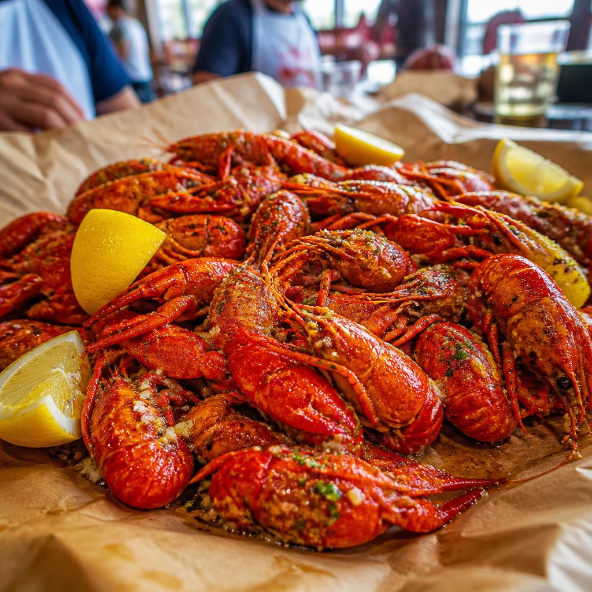

H-TOWN FAVORITE / 01GULF COAST × GULF COAST
Viet-Cajun
crawfish
Louisiana spice meets Vietnamese aromatics: crawfish tossed in garlicky, buttery seasoning, best eaten with your hands and people you like.
TEXAS, USA / 29.7604° N, 95.3698° W
Big-hearted, many-flavored, and always a little surprising. Start here, then make the city your own.
Meet the local flavor01 / THE TABLE
In Houston, the best introductions happen over a shared table. Our food is a map of the people who call this place home.
A few things to know
H-TOWN FAVORITE / 01GULF COAST × GULF COAST
Louisiana spice meets Vietnamese aromatics: crawfish tossed in garlicky, buttery seasoning, best eaten with your hands and people you like.
02 / THE QUICK READ
03 / CITY HALL
A city is its people.
And the person at the helm is
Mayor of Houston
04 / STATE SYMBOL
The northern mockingbird is Texas's state bird—famous for borrowing the songs of others and making them unmistakably its own.
THE TEXAS NORTHERN MOCKINGBIRD STATE BIRD SINCE 1927
05 / YOUR HOUSTON
Make this guide yours. Keep a little list of the places, bites, and moments you want to remember.
YOUR NOTES 0 ITEMS
Your list is a blank page. Give it a good first line.
06 / THE LOCAL LINE
Ask about the city, its neighborhoods, or what to try next. Think of this as a good local with time for one more question.